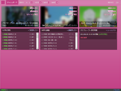
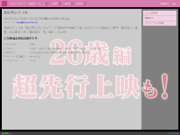
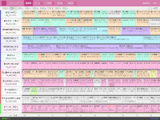
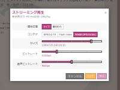
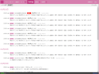
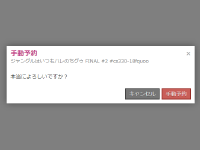
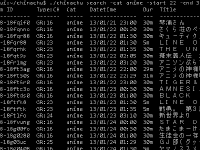
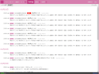
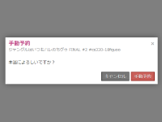
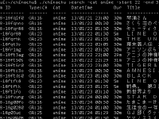

Chinachu beta
A open source EPG digital video recorder system for Linux.
Chinachuは、Linuxで動作する、デジタル放送番組向けのEPG録画予約管理システムです。
細かい予約ルールによる録画予約の完全自動化や、socket.ioによるリアルタイム性の高いWUIアプリを実現しています。
REST APIとWUIは、ウェブサーバーとして単独で動作しますので、ApacheやPHP等は不要です。
そしてMySQL等のDBMSは利用せず、軽快に動作します。必要なデーターはすべて人間にも理解可能なJSON形式で保存されます。
システムの大半がNodeプラットフォーム上で動作しますが、インストーラーが自身専用に自動構築するので、特に気にする必要はありません。Linuxの知識だけで導入できます。
Features
- EPG-driven
- Fully-automated Reserving by Rule
- HTTP Streaming, HTTP Live Streaming (FFmpeg live transcoding)
- Partial Supports ISDB / DVB
- Multi Track Recording (Unlimited Tuners)
- Real-time WUI (Supports IPv6, Auth, TLS)
- REST API
- CLI
- Tweeting *testing
- IRC Bot *testing




 





Documentation
https://github.com/kanreisa/Chinachu/wiki
Disclaimer
Chinachu is EXPERIMENTAL system developed for academic research. it's open-source software with ABSOLUTELY NO WARRANTY.
Chinachuは学術研究目的で開発された試験的なシステムです。全ての動作において無保証です。 このシステムによる全ての結果に対して当プロジェクトは一切の責任を持ちません。 このオープンソースソフトウェアは主にデジタル放送受信装置開発者を対象にしているものです。 ライセンスに従う限りどなたでも自由にソースコードを利用・改変し組込開発等を実施することができます。 また、これには実際の放送電波を受信するための機能や暗号化されたデータを取り扱う機能等は全く有しておらず、 実運用を実施するには対象の利用信号における規定を元に別途用意する必要があります。
Support or Contact
For anything non-support related you can contact me at @pixely.jp or @kanreisa. I don't have the time to answer every support related email individually.
Licenses
Code licensed under the MIT-License. Documentation licensed under CC BY 3.0.
Copyright (c) 2012 Yuki KAN and Chinachu Project Contributors http://chinachu.akkar.in/